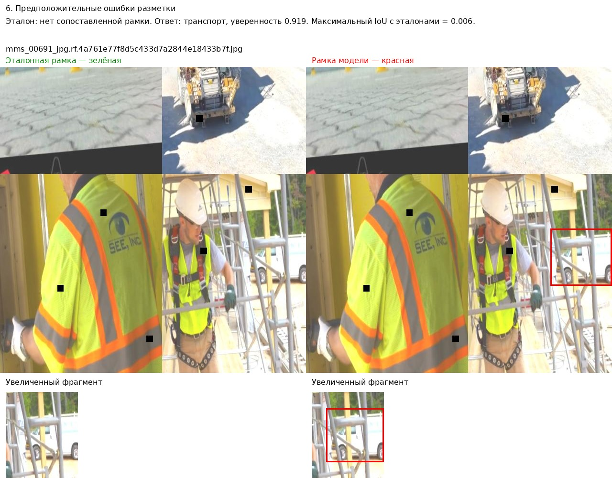
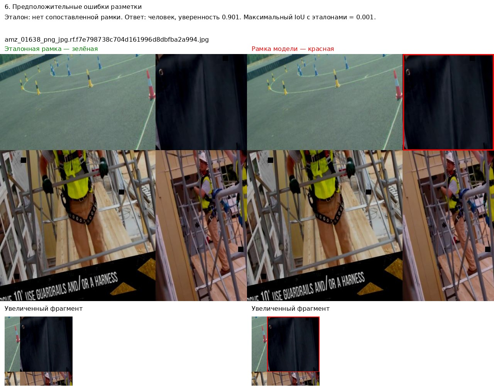

Уверенность ≥ 0.85, IoU со всеми эталонами < 0.1. Это подозрение, а не доказанная ошибка разметки.
Слева эталон, справа ответ модели. Показаны только рассматриваемые рамки.
Кандидатов: 2; показано кадров: 2.

mms_00691_jpg.rf.4a761e77f8d5c433d7a2844e18433b7f.jpg Эталон: нет сопоставленной рамки.
Ответ: транспорт, уверенность 0.919. Максимальный IoU с эталонами = 0.006.

amz_01638_png_jpg.rf.f7e798738c704d161996d8dbfba2a994.jpg Эталон: нет сопоставленной рамки.
Ответ: человек, уверенность 0.901. Максимальный IoU с эталонами = 0.001.